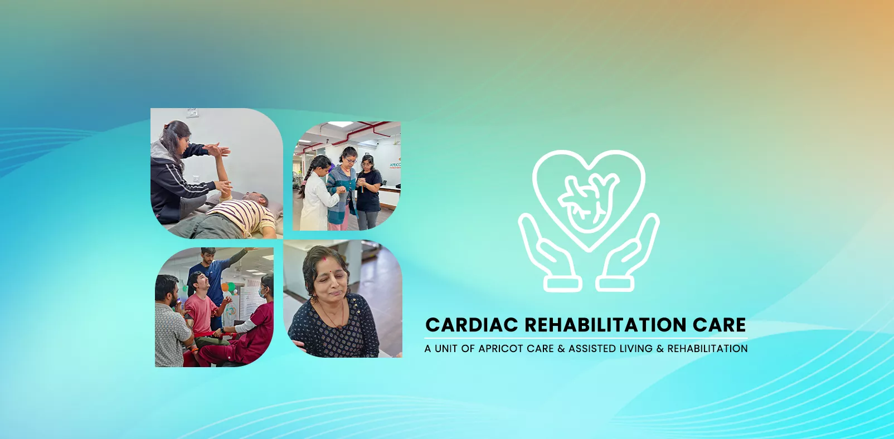

Comprehensive Cardiac Rehabilitation


Your Medically Supervised Journey to a Stronger, Healthier Heart
Surviving a heart attack, undergoing bypass surgery, or having a stent placed is a life-altering experience that can leave you feeling vulnerable and uncertain about the future. It's common to feel anxious about physical activity and unsure of what your body is capable of. The most important question becomes: "What now?"
The answer is Cardiac Rehabilitation. At Apricot Care Assisted Living and Rehabilitation in Pune, we offer a comprehensive, medically supervised program that is the single most important step you can take to not just recover from your cardiac event, but to build a stronger, healthier, and more resilient future. Our program is a partnership designed to help you regain your strength, reduce your risk of future heart problems, and restore your confidence in your body.
Key Components of Your Cardiac Rehabilitation
Our program is built on the three pillars of modern cardiac care, addressing your physical, educational, and emotional needs.
- Medically Supervised Exercise: Personalized, ECG-monitored exercise to safely improve your heart's strength.
- Heart-Healthy Lifestyle Education: Expert guidance on nutrition, medication, and managing risk factors.
- Stress Management & Counseling: Support for managing the emotional impact of a cardiac event.
- Risk Factor Modification: Proactive strategies to control blood pressure, cholesterol, and diabetes.
- Personalized Goal Setting: A customized plan to help you safely return to work and daily activities.
- Continuous Vitals Monitoring: Ensuring your utmost safety during every moment of every session.
What is Cardiac Rehabilitation?
Cardiac rehabilitation is a customized outpatient program of exercise and education. It is not just "going to the gym." It is a prescribed, centeral service designed to improve your cardiovascular health under the watchful eye of a dedicated medical team.
Cardiovascular diseases are a leading cause of mortality in India, but the good news is that they are largely preventable and manageable. Research overwhelmingly shows that patients who complete a cardiac rehab program can reduce their risk of dying from a future cardiac event by up to 40%. Our program is your structured path to achieving that protection.
Who is a Candidate for Cardiac Rehabilitation?
Our program in Pune is designed for individuals who have experienced:
- Early Stages:A recent heart attack (Myocardial Infarction)
- Heart surgery (Coronary Artery Bypass Grafting - CABG, Valve Replacement)
- A heart procedure (Angioplasty, Stenting)
- Stable Angina (chest pain)
- Heart Failure
The Four Phases of Cardiac Rehabilitation: From Hospital Bed to Active Life
Cardiac rehabilitation is not a single event. It is a structured, progressive journey divided into four distinct phases. Each phase builds on the previous one, gradually increasing your physical capacity while reducing your risk of future heart problems. Understanding these phases helps you see the full picture of your recovery path.
Phase 1: Inpatient Rehabilitation (During Your Hospital Stay)
This phase begins while you are still recovering in the hospital after your cardiac event or surgery. The focus is on preventing complications from bed rest, such as blood clots and muscle weakness. A physiotherapist will visit you at your bedside and guide you through gentle movements: sitting up, standing, and taking your first short walks in the hospital corridor. This early mobilization is safe and plays a significant role in your overall recovery timeline.
Phase 2: Early Outpatient Rehabilitation (Weeks 2 to 12)
This is the most intensive and structured phase, and it is the core of what we offer at Apricot Care in Pune. Once your cardiologist clears you for outpatient rehabilitation, you begin supervised exercise sessions at our facility. Each session is closely monitored with continuous ECG tracking, blood pressure checks, and oxygen level readings. You will typically attend two to three sessions per week. During this phase, we also begin your education on heart-healthy nutrition, stress management techniques, and medication adherence.
Phase 3: Intermediate Recovery (Months 3 to 6)
By this stage, you have built a solid foundation of fitness and knowledge. The intensity of your exercise program increases, and you begin transitioning toward more independent workouts. Our team continues to monitor your progress, adjust your plan, and introduce new exercises to challenge your improving cardiovascular system. Many patients at this stage notice significant improvements in their energy levels, sleep quality, and overall mood.
Phase 4: Lifelong Maintenance
The ultimate goal of cardiac rehab is to equip you with the skills, habits, and confidence to maintain a heart-healthy lifestyle on your own. In Phase 4, you continue the exercise and dietary habits you developed during the program. We provide you with a detailed home exercise plan and schedule periodic follow-up assessments to track your long-term progress. Many of our patients describe this phase as the point where healthy living simply becomes part of who they are.
What to Expect in Your First Cardiac Rehab Session at Apricot Care
Walking into your first cardiac rehabilitation session can feel intimidating, especially if you have never done structured exercise before or if your cardiac event has left you feeling cautious about physical activity. Here is exactly what happens during your first visit so you know what to expect.
Step 1: Comprehensive Initial Assessment
Your first session is primarily an assessment, not a workout. Our physiotherapist will sit down with you and review your complete medical history, including your cardiac event details, surgical reports, current medications, and any other health conditions. We will also review any instructions or restrictions from your cardiologist.
Step 2: Baseline Fitness Testing
We conduct a series of safe, supervised tests to understand your current fitness level. This typically includes a resting ECG, blood pressure measurement, a six-minute walk test, and grip strength testing. These baseline numbers are important because they give us a clear starting point and allow us to measure your progress over the coming weeks and months.
Step 3: Goal Setting Conversation
We ask you about your personal goals. Do you want to return to work? Play with your grandchildren without getting breathless? Walk to the temple comfortably? Climb stairs without chest discomfort? Your answers shape the direction of your entire program. We set realistic, achievable short-term and long-term goals together.
Step 4: Your First Supervised Exercise
Toward the end of your first session, we introduce a very gentle, short exercise session, usually 10 to 15 minutes of slow walking on a treadmill or pedaling on a stationary bike. You will be connected to an ECG monitor throughout. Our physiotherapist will be right beside you, watching your heart rhythm and vital signs in real time. The goal is not intensity. It is simply to establish your body's response to activity in a controlled, safe environment.
Step 5: Personalized Program Briefing
Before you leave, we walk you through your customized rehabilitation plan. This includes your session schedule (typically two to three times per week), what to wear and bring, warning signs to watch for at home, and a brief introduction to the educational sessions you will attend in the coming weeks.
The Three Pillars of Our Cardiac Rehab Program
Our comprehensive program integrates the three essential components of world-class cardiac care.
Medically Supervised Exercise Training
This is the heart of the program. We help you rebuild your physical strength safely.
- Initial Assessment: We begin with a thorough fitness assessment to determine a safe and effective starting point for you.
- Continuous Monitoring: During every session, you will be connected to an ECG monitor that tracks your heart's electrical activity in real-time. Our Physiotherapists continuously monitor your heart rate, blood pressure, and oxygen levels to ensure you are exercising safely and effectively, without undue strain on your heart.
- Progressive Exercise Plan: Your personalized plan will include a mix of aerobic exercise (like on a treadmill or stationary bike) and light resistance training. We gradually increase the duration and intensity as your heart becomes stronger.
Education for a Heart-Healthy Life
Knowledge is your best defense against future heart problems. We provide you with the essential information you need to take control of your health.
- Nutrition Counseling: Our dietitians provide practical advice on a heart-healthy diet, focusing on reducing salt, managing fats, and eating for a healthy weight.
- Medication Management: We help you understand your prescribed medications—what they are for, why they are important, and how to take them correctly.
Counseling and Stress Management
Recovering from a heart event is an emotional journey as well as a physical one. Feeling anxious or depressed is very normal.
- Stress Management: Our psychologists and Physiotherapists teach you practical techniques for managing stress, such as deep breathing and mindfulness, which have a direct positive impact on heart health.
- Emotional Support: We provide a safe space to discuss your fears and anxieties, helping you cope with the emotional side of recovery and build a positive outlook for the future.
Proven Benefits of Cardiac Rehabilitation: What the Research Shows
Cardiac rehabilitation is one of the most extensively studied medical interventions in cardiology. Decades of research worldwide by institutions such as the American Heart Association, the European Society of Cardiology, and leading Indian cardiac centers consistently show that completing a structured rehab program delivers measurable, life changing results.
Reduced Mortality Risk
Patients who complete cardiac rehab reduce their risk of dying from heart disease by 25% to 40% over the following three to five years.
Fewer Hospital Readmissions
Rehab participants are 25% to 30% less likely to be readmitted to the hospital for a cardiac event within 12 months.
Improved Physical Fitness
On average, patients see a 15% to 25% improvement in peak exercise capacity within 12 weeks of starting the program.
Better Blood Pressure Control
Structured exercise combined with dietary guidance leads to measurable reductions in both systolic and diastolic blood pressure.
Improved Cholesterol Levels
Regular aerobic exercise raises HDL (good) cholesterol and reduces LDL (bad) cholesterol and triglycerides.
Better Mental Health
Patients report significant reductions in anxiety and depression symptoms, with improvements in sleep quality and overall sense of well-being.
Reduced Medication Dependence
Many patients, under their cardiologist's guidance, are able to reduce the dosage of certain medications as their fitness and health markers improve.
Return to Work and Daily Life
Structured rehab programs significantly improve the rate at which patients return to work and resume their normal daily activities with confidence.

our service
Our Comprehensive Care and Support Services
.webp)
.webp)
-(1).webp)
24/7 Nursing and Medical Supervision
At Apricot Care Assisted Living and Rehabilitation, we provide 24/7 nursing support to ensure that you receive continuous care and medical monitoring. Whether you're staying in our facility or recovering at home, our trained nurses and medical staff are always available to address your needs, ensuring a safe and secure environment throughout your recovery journey.
.webp)
.webp)
.webp)
.webp)
.webp)
.webp)
.webp)
.webp)
.webp)
.webp)
.webp)
.webp)
Why Choose Apricot Care Assisted Living and Rehabilitation For Your Cardiac Care in Pune?
A Medically Supervised, centeral Environment
Your safety is our absolute priority. Our program is supervised by medical professionals with continuous ECG and vital signs monitoring during all exercise sessions. This is a centeral program, not a gym membership.
One-on-One Monitoring and Guidance
You receive the constant attention of our skilled Physiotherapists during your sessions, ensuring your exercise is always safe, appropriate, and effective.
A Holistic, Multidisciplinary Team
Our team of Physiotherapists, dietitians, and psychologists work together to create a truly comprehensive program that addresses your physical, nutritional, and emotional health.
A Focus on Lifelong Healthy Habits
Our goal is not just to get you through the first few months. We are committed to empowering you with the knowledge and habits you need to maintain a heart-healthy lifestyle for the rest of your life.
Your Cardiac Recovery Timeline: Week by Week
Every patient recovers at their own pace; your timeline will be personalized to your specific condition and goals. The table below offers a clear overview of what most cardiac rehab journeys look like.
| Timeframe | What Happens | What You Can Expect to Feel |
|---|---|---|
| Week 1 | Initial assessment, baseline testing, first gentle supervised exercise (10-15 min walking/cycling). | Some nervousness is normal. You may tire quickly. Your team closely monitors every response. |
| Weeks 2-4 | Exercise duration increases to 20-30 minutes. ECG-monitored sessions 2–3 times per week. Nutrition counseling begins. | Gradual improvement in energy. Walking feels easier. Sleep quality starts to improve. |
| Weeks 5-8 | Exercise intensity and duration increase. Light resistance training introduced. Stress management sessions begin. | Noticeable gains in stamina. Many patients feel more optimistic and less anxious about their heart. |
| Weeks 9-12 | Approaching full program duration. Fitness re-assessment to measure progress. Transition planning for independent exercise. | Significant improvement over baseline fitness. Patients often describe feeling stronger than they have in years. |
| Months 4-6 | Transition to Phase 3 intermediate program. Greater exercise independence with periodic supervised check-ins. | Confidence in physical activity is high. Healthy eating and exercise feel like established routines. |
| Month 6+ | Lifelong maintenance phase. Home exercise plan with scheduled follow-up assessments. | Cardiac rehab habits are part of daily life. Regular follow-ups ensure long-term progress and accountability. |